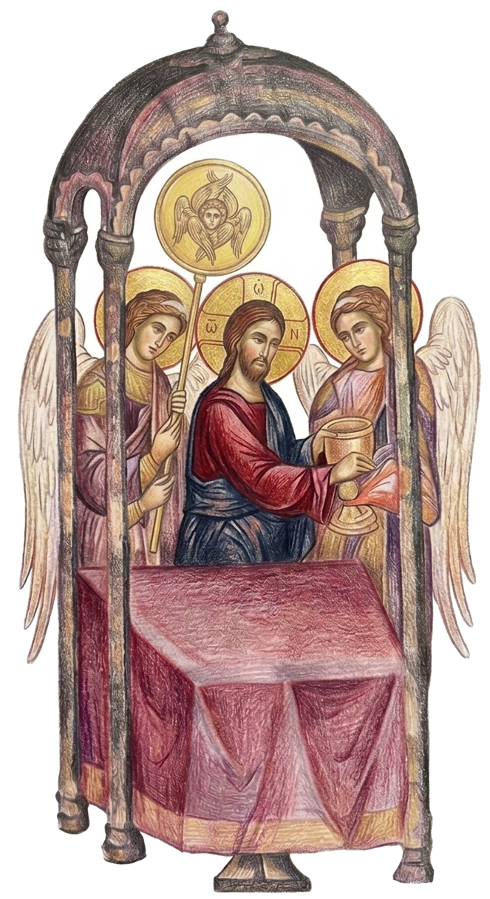

This table is the sinews of our soul, the bond of our mind, the foundation of our confidence, our hope, our salvation, our light, our life.
— St John Chrysostom
This table is the sinews of our soul, the bond of our mind, the foundation of our confidence, our hope, our salvation, our light, our life.
— St John Chrysostom
What Is the Divine Liturgy?
“Not even the most precise description of the Liturgy can fully explain the inner, spiritual essence of the Eucharist.”1 It is the central point to which the whole Christian life moves and about which it revolves.2 It is “the heart of the whole life of the Church, the means and the expression of her unity with Christ.”3

From the beginning mankind was intended to be in constant communion with God. The joyous, life-giving relationship between God and man was continually renewed by man offering thanksgiving to His Creator for His gift of everything necessary for life. This transformed sacramentalized the simple act of living and eating into communion with God. The cycle of communion—of receiving life, offering thanks, and again receiving—was broken by sin when man saw God’s gifts not as means of communion but as ends unto themselves and there for his own pleasure and use without reference to God. Mankind became lost, separated from God. Life became futile, without purpose. Death reigned when man lost his life of eucharistic communion with God. (Eucharist is simply the Greek word for thanksgiving.) God, however, deeply loved mankind and did not leave His creation alienated from Him. God interceded on man’s behalf and became the perfect man in Christ. As a man, God, in Jesus Christ, did what no other man did or could do: He fully offered Himself and all of creation to God. In His life and in His death Jesus offered to God all life and everything that exists.
“In Him was life” St John 1.4
“In Him all things consist.” Colossians 1.17
In the Eucharist celebration when we offer up to God bread and wine representing the gifts He has given us to maintain life “we offer the world and ourselves to God. But we do it in Christ and in remembrance of Him. We do it in Christ because He has already offered all that is to be offered to God. He has performed once and for all this Eucharist, and nothing has been left unoffered. In Him was Life—and this life of all of us, He gave to God. The Church is all those who have been accepted